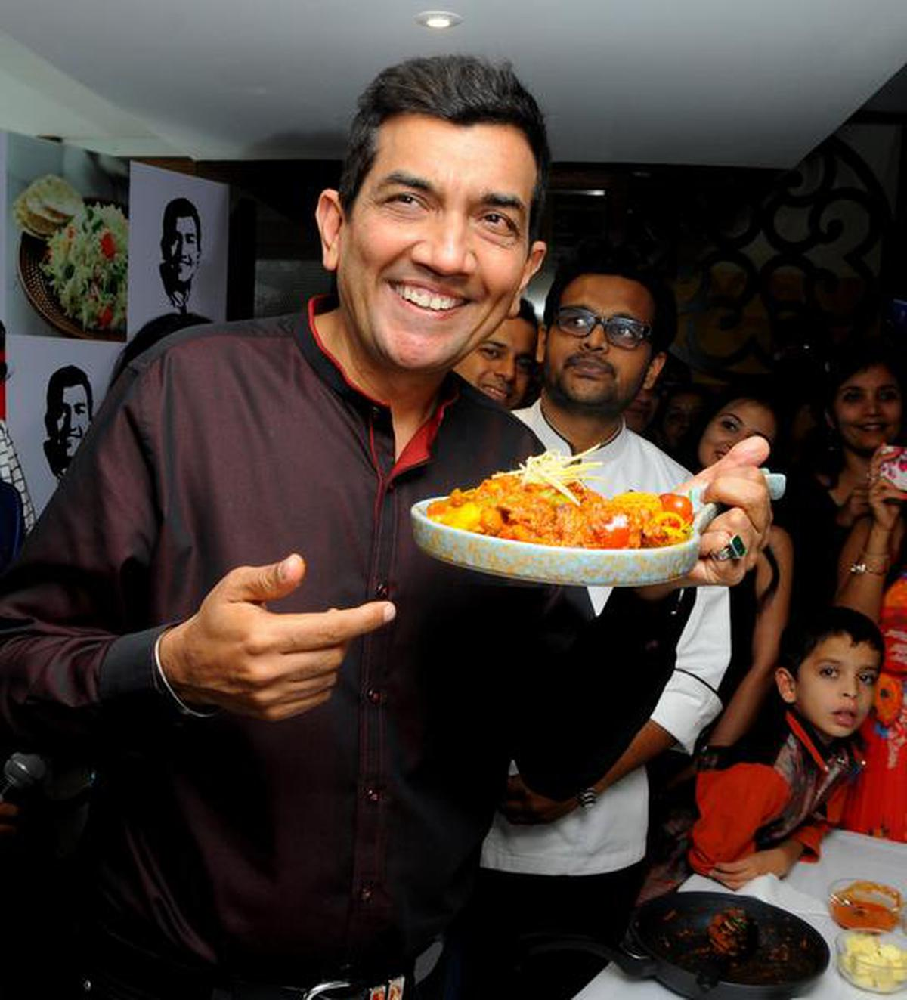
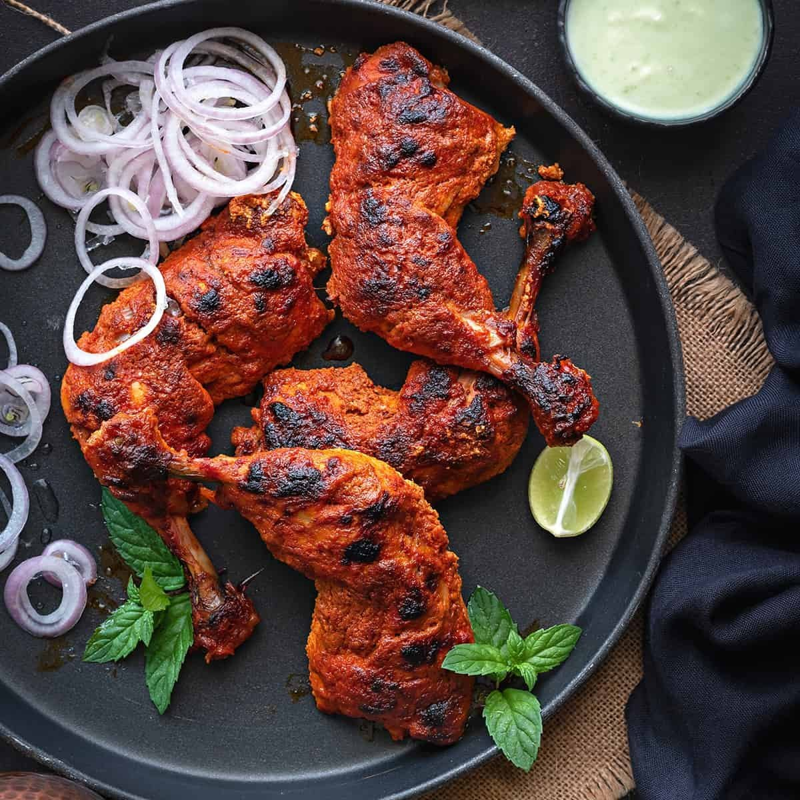
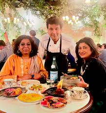
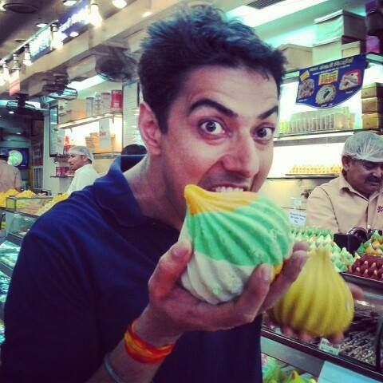
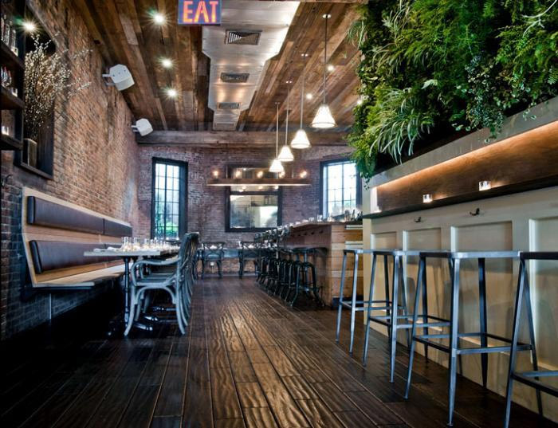
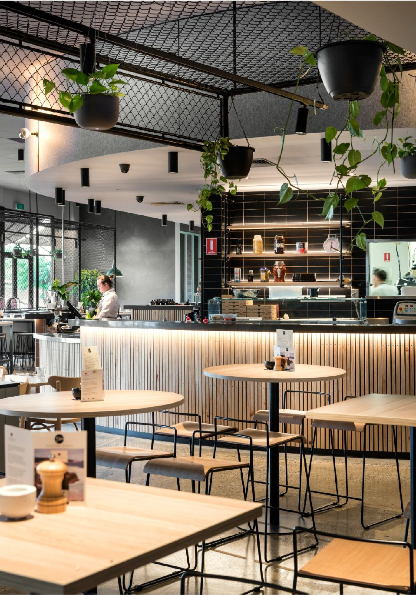

Sanjeev Kapoor

It was a great experience at "Cafe De Grande" situated at heart of city Kolkata. The food was marvellous, the Butter Chicken I can't ever forget!
This is a must-visit place at Kolkata for me personally!
"Must Visit"
Robert Sietsema

With talented chefs working backend and too polite yet professional waiters working frontend, the overall experience was really more than worth.
The picture you see is the juicy Tandoori Chicken that I ordered after Masterchef Vikas's recommendation!
"Just excellent"
Robert Sietsema

I have rarely visited such a restaurant, a one-stop for all varities of top quality dishes. Being a chinese lover,
I loved the Chicken Manchurian they made using authentic chinese ingredients.
Would love to visit again!
"Awesome food"
Ranveer Brar

Had a chitchat with the chefs, their creativity and way of thinking literally blew away my mind. Much to learn from them.
Desserts were of top quality, but need a little more work on Continentals...
"Top quality"
Abhrajit Saha

Visited the restaurant the same day as the visit of Masterchef Vikas Khanna. Even during his grand presence, I didn't feel negltected
by the waiters and staffs even by a speck.
Service and quality are mindblowing here!
"Service OP"
Somtirtha Sinha

Highly aesthetic interiors and food presentation, quality of taste is top-notch. Happened to meet the owner as well, he is
so down-to-earth.
Prices need to be normalised a bit, rest no comparison with other 5* restaurants.
"Aesthetic"